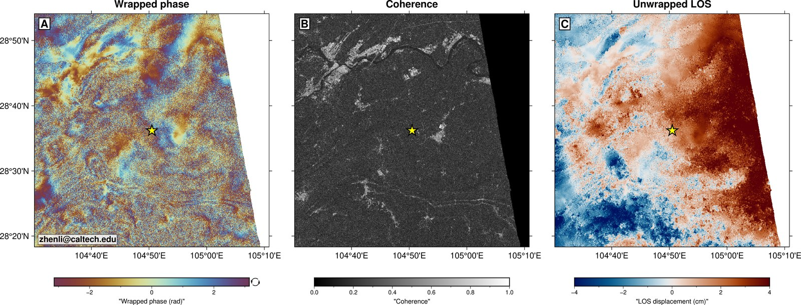

us6000t8u3| Origin time (UTC) | 2026-06-28 16:12:08 UTC |
|---|---|
| Latitude | 28.6031° |
| Longitude | 104.8416° |
| Depth | 10.0 km |
| Mw (preferred) | 5.2 (mww) |
| Region | 8 km WNW of Changning, China |
| USGS page | https://earthquake.usgs.gov/earthquakes/eventpage/us6000t8u3 |
This event passes Quakesight monitoring criteria (M ≥ 5.0, depth ≤ 50 km, land epicenter). The monitor will track Sentinel-1 acquisitions and trigger InSAR processing once post-event scenes appear on ASF DAAC.
| Pair | S1A 2026-06-13 ↔ S1D 2026-07-02 (19-day, cross-platform S1A↔S1D) |
|---|---|
| Backend | s1ot single-pair + snaphu unwrapping (2nd Goldstein pass, StaMPS alpha=0.8) |
| Median coherence (AOI) | 0.37 (epicenter ±15 km: 0.22 — vegetated southern Sichuan) |
| Fraction unwrapped | 0.87 |
| Atmospheric residual | 2.1 cm |
| Signal assessment | No discernible coseismic fringes at the epicenter. Expected LOS displacement for Mw 5.2 at 10 km depth is a few mm — below the 2.1 cm atmospheric residual of a single pair. |

Panels: wrapped phase · coherence · unwrapped LOS. Yellow star = USGS epicenter.
Products: events/us6000t8u3/insar/ASC_T128/ (disp_cm.tif, coh.tif, ifg_phase.tif, look vectors).
Single-pair detection is not expected for this magnitude/depth; a stack of multiple post-event pairs is required (standard small-moderate-event protocol). Next ASC_T128 post-event acquisition ~2026-07-14; first post-event DES acquisitions expected 2026-07-03–07-09 (S1A/S1C DES). Monitor next check: 2026-07-09.
Auto-generated at 2026-06-28T16:50:04Z from USGS feeds; InSAR section updated 2026-07-03T02:32:13Z.